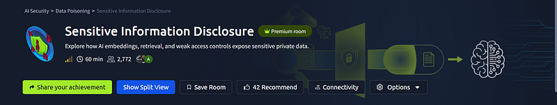
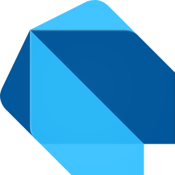
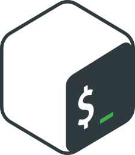

Security engineer and red teamer
I'm Sudarshan, an M.Tech student at IIIT Gwalior until 2028. I build and break security tools: phishing detection, Rust recon, post-quantum crypto.

GitHub repos and the rustscan-rs scanner
Each row is a public repo on GitHub. The open one is rustscan-rs, my async port scanner in Rust: TCP and UDP, banners, TLS certificates and an HTML report.
See all repos on GitHub- RSrustscan-rsAsync TCP and UDP port scannerRustJun
- SFsecureflow-aiFive agents triage SOC alertsPythonJun
- PGphishguard-proPhishing checks in ChromePythonJun
- PQpostquantumML-KEM-1024 handshakePythonOct
- LWcrypto_projectLWE decoding retry studyJupyterNov
- ELEntropyLensEntropy source health checksPythonOct
- BFBlueFuzzBluetooth stack fuzzerPythonDec
- PTPlumetraceFinds the source of gas leaksPythonJul
- T8track8-ai-pipelineCrime-scene photo analysisPythonSep
- SSSyncSphereMusic in sync across phonesDartNov
- BLboardgame-labAI players playtest rulesJavaScriptNov
Security projects. Code for each is on GitHub.
Triages alerts with five AI agents
SecureFlow AI: triage, investigation, threat intel, memory and response agents share one knowledge graph. Built for FlowZint 2026.
Flags phishing pages in under 80 ms
PhishGuard Pro: a Chrome extension asks a FastAPI service, XGBoost on the URL first, then a random forest on 58 features.
- Blocked a login pagepaypa1-login.example, URL model 0.98Why
- Page checked as safeTier 2, page features, 61 ms
- Shortened link expandedChecked the page it leads to
Runs a handshake a quantum computer can't break
A TLS-style handshake on the CNSA 2.0 suite: ML-KEM-1024 for keys, ML-DSA-87 to sign, AES-256-GCM for data.
Fuzzes the Linux Bluetooth stack
BlueFuzz sends malformed ACL and L2CAP packets through the virtual HCI, so no radio is needed, and watches dmesg for crashes.
- Open /dev/vhci
- Build ACL and L2CAP frames
- Mutate: bitflip, overflow
- Watch dmesg for a crash
- Replay the crashing packet
Project results in numbers
accuracy of PhishGuard Pro's URL model on its test set
97.1%
URLs the phishing detector's DistilBERT model learned from
1.33M
AI agents sharing one knowledge graph in SecureFlow AI
5
simulated games per strategy in Boardgame Lab
10,000
Research projects and hackathon builds
Course work, hackathons and studies. Each has its code and a write-up of what worked and what did not.
 LWE decoding study
LWE decoding studyShows retries on re-randomised lattice bases are not independent.
- EntropyLens
Spots a failing entropy source and measures the false-alarm cost.
 PlumeTrace
PlumeTraceFinds the factory behind a gas leak with a physics-informed network.
- OSCAR Track 8
Reads crime-scene photos for clues and their region. Hac'KP 2026.

SyncSpherePlays one track in sync on several phones over local Wi-Fi.
 Boardgame Lab
Boardgame LabAI players test a board game's rules, each in a private room.
TryHackMe write-ups on Medium
Programming languages and security tools
On engagements also Burp Suite, Nmap, Wireshark, Metasploit, Ghidra and x64dbg. Member of Zero Day Club, IIIT Gwalior.

BashCertifications
Google Cloud Security Cisco Ethical Hacker IBM Malware Analysis ISO/IEC 27001 API Security Fundamentals
Terminal with my CV in it
Type help, then ls, cat about.txt or cd projects. It runs in your browser and keeps your command history.
Contact form and links
About a role, a CTF team or one of these projects. It goes to my inbox; or write from your own mail app.
 GitHub
GitHub17 public repos, the code for every project here
 LinkedIn
LinkedInEducation, clubs and certifications
- Medium
TryHackMe write-ups
 Résumé
RésuméOne-page PDF download